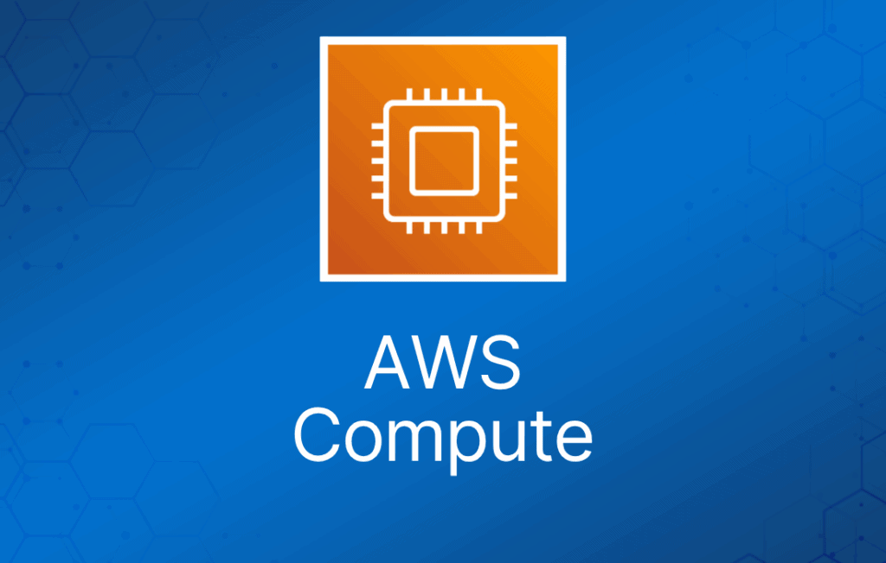
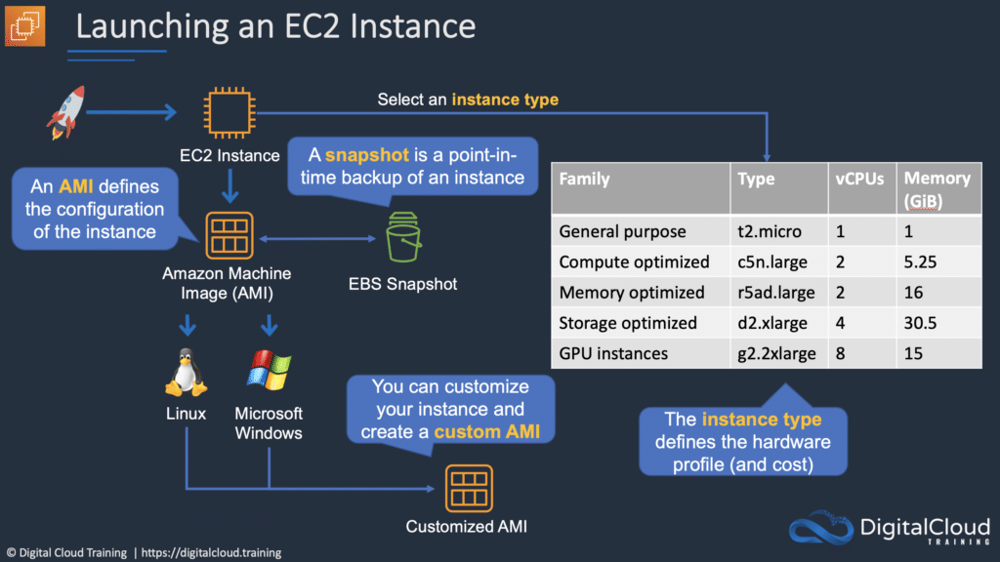
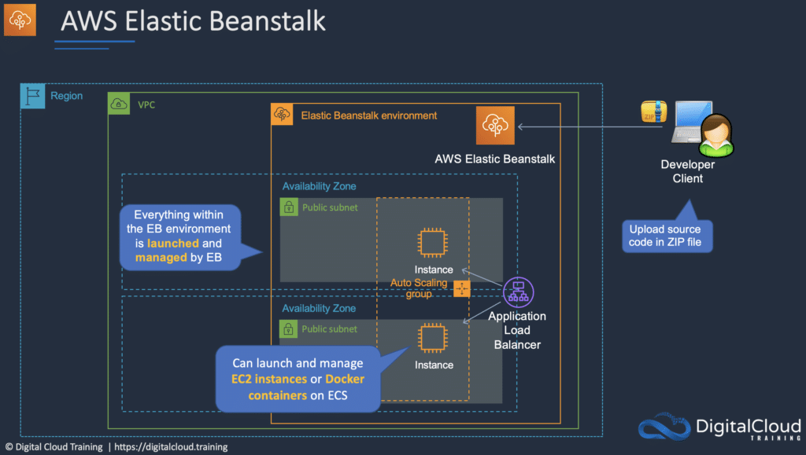

本文从 AWS Certified Cloud Practitioner 考试的角度讨论 AWS 计算服务，这是考试大纲中的关键技术领域之一。
Amazon EC2
Amazon Elastic Compute Cloud（Amazon EC2）是一项 Web 服务，让你可以在云中运行虚拟服务器“实例”。
Amazon EC2 实例可以运行 Windows、Linux 或 macOS 操作系统。
EC2 简洁的 Web 服务接口让你能够以最小的阻力获取和配置计算容量。
EC2 的设计目标是让开发者更容易进行 Web 规模的云计算。
Amazon EC2 让你只需为实际使用的容量付费，改变了计算的经济模式。
Amazon EC2 为开发者提供了构建容错应用的工具，并将其与常见故障场景隔离开来。
EC2 的优势包括：
- 弹性的 Web 规模计算 —— 可以在几分钟内（而非几小时）增减容量，并同时启动一到数千个实例。
- 完全可控 —— 你对每个实例拥有完全控制权（包括 root 访问），可以通过 Web 服务 API 停止和启动实例而不丢失数据。
- 灵活的云托管服务 —— 可以从多种实例类型、操作系统和软件包中选择，也可以选择不同内存、CPU 和存储配置的实例。
- 集成性 —— EC2 与大多数 AWS 服务（如 S3、RDS 和 VPC）集成，提供完整、安全的解决方案。
- 可靠性 —— EC2 提供高度可靠的环境，可以快速、可预期地启用替换实例，每个区域的 SLA 为 99.99%。
- 安全性 —— EC2 与 VPC 配合，在你指定的 IP 地址范围内提供安全的环境，并提供 Security Group、Network ACL 和 IPSec VPN 功能。
- 低成本 —— Amazon 将规模效应带来的成本优势传递给用户，费率很低，且按实际消耗容量计费。
Amazon Machine Image（AMI）是一种特殊类型的虚拟 appliance，用于在 Amazon Elastic Compute Cloud（EC2）中创建虚拟机。
AMI 包含以下内容：
- 一个或多个 EBS 快照；对于 instance-store -backed AMI，则是实例根卷的模板（例如操作系统、应用服务器和应用程序）。
- 启动权限，控制哪些 AWS 账户可以使用该 AMI 启动实例。
- 块设备映射（block device mapping），指定实例启动时要挂载的卷。
AMI 主要分为三类：
- Community AMI —— 免费使用，一般只需选择想要的操作系统。
- AWS Marketplace AMI —— 付费使用，通常打包了额外的授权软件。
- My AMIs —— 你自己创建的 AMI。

元数据（Metadata）与用户数据（User Data）：
- User data 是用户在实例启动时以脚本形式提供的数据。
- 实例元数据是关于实例的数据，可用于配置或管理运行中的实例。
- User data 上限为 16KB。
- User data 和元数据都不加密。
- 实例元数据可通过 http://169.254.169.254/latest/meta-data 访问。
Instance Metadata Query 工具让你无需输入完整 URI 或类别名称即可查询实例元数据。
定价
按需（On-Demand）：
- 适合希望享受 EC2 低成本和灵活性、又不想预付费或做长期承诺的用户。
- 适合短期、波动大或不可预测、且不能被中断的工作负载。
- 适合首次在 EC2 上开发或测试的应用。
预留实例（Reserved）：
- 适合用量稳定或可预测的应用。
- 适合需要预留容量的应用。
- 用户可以通过预付款进一步降低总体计算成本。
- 标准预留实例（Standard RI）相比按需价格最高可省 75%。
- 可转换预留实例（Convertible RI）相比按需价格最高可省 54% —— 允许更改 RI 的属性，前提是转换后的 RI 价值等于或大于原 RI。
- 计划预留实例（Scheduled RI）可在你预留的时间窗口内启动。该选项让你把容量预留与可预测的周期性计划匹配，只需每天、每周或每月中的一部分时间。
竞价实例（Spot）：
- 适合开始和结束时间灵活的应用。
- 适合只有在极低计算价格下才可行的应用。
- 适合急需大量额外计算容量的用户。
- 如果是 Amazon 终止你的实例，你无需付费；如果是你自己终止，则需支付该小时的费用。
专用主机（Dedicated Hosts）：
- 专供你使用的物理服务器。
- 你可以控制哪些实例部署在该主机上。
- 可按需购买，也可通过 Dedicated Host Reservation 购买。
- 适合有绑定服务器的软件许可证（按核心、按插槽或按 VM 计费）的场景。
- 每台专用主机只能运行一种 EC2 实例规格和类型。
- 适合监管合规或许可证要求。
- 性能可预测。
- 完全隔离。
- 最贵的选项。
- 按主机计费。
专用实例（Dedicated Instances）：
- 运行在专属于你的硬件上的虚拟化实例。
- 同样使用物理上专用的 EC2 服务器。
- 不提供专用主机的额外可见性和控制能力（例如实例在服务器上的放置方式）。
- 按实例计费。
- 可能与同一账户中的其他非专用实例共享硬件。
- 可按需、预留实例或竞价实例方式购买。
- 每个区域每小时额外收取 $2。
Savings Plans：
- Savings Plans 是一种灵活的定价模式，可为你的 AWS 计算用量节省最多 72%。
- 该定价模式为 Amazon EC2 实例用量提供更低价格，不受实例系列、规格、操作系统、租期（tenancy）或 AWS 区域限制。
- 同样适用于 AWS Fargate 和 AWS Lambda 用量。
实例类型
Amazon EC2 提供多种实例类型，针对不同使用场景做了优化。
实例类型由不同的 CPU、内存、存储和网络容量组合构成，让你可以灵活地为应用选择合适的资源组合。
每种实例类型包含一个或多个实例规格，让你可以根据目标工作负载的需求扩展资源。
下表帮助你理解各种 EC2 实例系列及其预期使用场景：
| 系列 | 记忆提示 | 用途/设计 |
| D | DATA（数据） | 大量数据使用（如文件服务器、数据仓库） |
| R | RAM（内存） | 内存优化 |
| M | MAIN（主力） | 通用型（如应用服务器） |
| C | COMPUTE（计算） | 计算优化 |
| G | GRAPHICS（图形） | 图形密集型工作负载 |
| I | IOPS | 存储 I/O 优化（如 NoSQL、数据仓库） |
| F | FAST（快速） | 为应用提供 FPGA 硬件加速 |
| T | CHEAP（便宜，想想 T2） | 最低成本（如 T2-micro） |
| P | GPU | 需要 GPU 的场景 |
| X | EXTREME RAM（超大内存） | 大量内存使用（如 SAP HANA、Apache Spark） |
| U | HIGH MEMORY（高内存） | 高内存和裸金属性能——用于内存数据库，包括 SAP HANA |
| Z | HIGH COMPUTE & MEMORY（高计算+高内存） | 快速 CPU、高内存和基于 NVMe 的 SSD——用于需要高整体性能的场景 |
| H | HIGH DISK THROUGHPUT（高磁盘吞吐） | 最高 16 TB 基于 HDD 的本地存储 |
Amazon Elastic Container Service（ECS）
Amazon Elastic Container Service（ECS）是 AWS 计算类别中的另一款产品。它是一个高度可扩展、高性能的容器管理服务，支持 Docker 容器，让你可以轻松地在托管的 Amazon EC2 实例集群上运行应用。
Amazon ECS 让你无需自行安装、运维和扩展集群管理基础设施。
通过 API 调用，你可以启动和停止支持容器的应用、查询集群的完整状态，并使用许多熟悉的功能，如安全组、Elastic Load Balancing、EBS 卷和 IAM 角色。
Amazon ECS 可以根据资源需求和可用性要求，调度容器在集群中的放置位置。
Amazon ECS 的启动类型（launch type）决定你的任务和服务托管在哪种基础设施上。
共有两种启动类型，下表说明了两者的一些区别：
| Amazon EC2 | Amazon Fargate |
| 你显式预置 EC2 实例 | 控制面请求资源，Fargate 自动完成预置 |
| 你负责 EC2 池的升级、打补丁和维护 | Fargate 按需预置计算资源 |
| 你必须自己处理集群优化 | Fargate 处理集群优化 |
| 对基础设施有更细粒度的控制 | 控制有限，因为基础设施是自动化的 |
Elastic Container Registry（ECR）是托管的 AWS Docker 镜像仓库服务，用于存储、管理和部署 Docker 镜像。
Amazon ECS 本身不额外收费。你只需为存储和运行应用所创建的 AWS 资源（如 EC2 实例或 EBS 卷）付费。
Amazon ECR 与 Amazon EC2 Container Service（ECS）集成。
Amazon ECR 没有预付费或承诺，你只需为仓库中存储的数据量和传输到互联网的数据量付费。
AWS Lambda
AWS Lambda 是一种无服务器（serverless）计算技术，让你无需预置或管理服务器即可运行代码。
AWS Lambda 只在需要时执行代码，并自动扩展。
你只需为消耗的计算时间付费（代码不运行时不收费）。
AWS Lambda 的优势：
- 无需管理服务器。
- 持续扩展。
- 毫秒级计费。
- 几乎可与所有其他 AWS 服务集成。
AWS Lambda 的主要使用场景：
- 数据处理。
- 实时文件处理。
- 实时流处理。
- 为 Web、移动、IoT 和第三方 API 请求构建无服务器后端。
Amazon LightSail
Amazon LightSail 实例
Amazon LightSail 是 AWS 计算产品套件中较新的服务之一。它非常适合不具备深厚 AWS 技术背景的用户，因为它让预置计算服务变得非常简单。
Amazon LightSail 为开发者提供计算、存储和网络能力，用于在云中部署和管理网站、Web 应用和数据库。
Amazon LightSail 包含快速启动项目所需的一切——虚拟机、基于 SSD 的存储、数据传输、DNS 管理和静态 IP。
Amazon LightSail 提供预配置的虚拟专用服务器（实例），包含部署应用或创建数据库所需的一切。
底层基础设施和操作系统由 Amazon LightSail 管理。
最适合只需要几十台或更少实例的项目。
提供简单的管理界面。
适合博客、网站、Web 应用、电商等。
可以部署负载均衡器并挂载块存储。
提供公开 API。
每个账户限制为 20 个 Amazon LightSail 实例、5 个静态 IP、3 个 DNS 区域、20 TB 块存储、40 个数据库和 5 个负载均衡器。
每个日历年最多 20 个证书。
实例之间以及与其他 AWS 资源之间可以通过公网和私有网络（VPC peering）互连。
应用模板包括 WordPress、WordPress Multisite、Drupal、Joomla!、Magento、Redmine、LAMP、Nginx（LEMP）、MEAN、Node.js 等。
Amazon LightSail 目前支持 6 种 Linux 或类 Unix 发行版：Amazon Linux、CentOS、Debian、FreeBSD、OpenSUSE 和 Ubuntu，以及 2 个 Windows Server 版本：2012 R2 和 2016。
Amazon LightSail 数据库
Amazon LightSail 数据库是专门用于运行数据库的实例。
一个 Amazon LightSail 数据库实例可以包含多个用户创建的数据库，你可以使用与独立数据库相同的工具和应用来访问它。
Amazon LightSail 托管数据库提供了一种简单、低维护的方式将数据存储在云中。
Amazon LightSail 为你的数据库及其底层基础设施管理一系列维护活动和安全事项。
Amazon LightSail 会自动备份你的数据库，并支持使用数据库还原工具对过去 7 天进行时间点恢复。
Amazon LightSail 数据库支持 MySQL 的最新主要版本，目前是 5.6、5.7 和 8.0。
Amazon LightSail 数据库提供标准（Standard）和高可用（High Availability）两种方案。
高可用方案通过在单独的可用区自动创建备用数据库，为数据库增加冗余和持久性。
Amazon LightSail 价格非常实惠。
Amazon LightSail 方案按按需小时费率计费，你只需为实际使用付费。
对于你使用的每个 Amazon LightSail 方案，按固定小时价格收费，最高不超过该方案的月度封顶费用。
AWS Elastic Beanstalk
AWS Elastic Beanstalk 是在 AWS 上启动和运行 Web 应用最快速、最简单的方式。
开发者只需上传应用代码，该服务会自动处理资源预置、负载均衡、自动扩展和监控等所有细节。
如果你有 PHP、Java、Python、Ruby、Node.js、.NET、Go 或 Docker 的 Web 应用，Elastic Beanstalk 是理想选择。
Elastic Beanstalk 使用 Amazon EC2、Amazon Elastic Container Service（Amazon ECS）、Auto Scaling 和 Elastic Load Balancing 等核心 AWS 服务，轻松支持需要扩展到服务数百万用户的应用。

AWS Batch
AWS Batch 让开发者、科学家和工程师能够在 AWS 上轻松、高效地运行数十万个批处理计算作业。
AWS Batch 根据提交的批处理作业的数量和具体资源需求，动态预置最优数量和类型的计算资源（例如 CPU 或内存优化实例）。
使用 AWS Batch，你只需打包批处理作业的代码、指定依赖项，然后通过 AWS Management Console、CLI 或 SDK 提交批处理作业。
AWS Batch 允许你指定执行参数和作业依赖，并便于与多种流行的批处理工作流引擎和语言集成（如 Pegasus WMS、Luigi 和 AWS Step Functions）。
AWS Batch 会根据作业需求，高效、动态地预置和扩展 Amazon EC2 和 Spot 实例。AWS Batch 提供默认的作业队列和计算环境定义，让你快速上手。